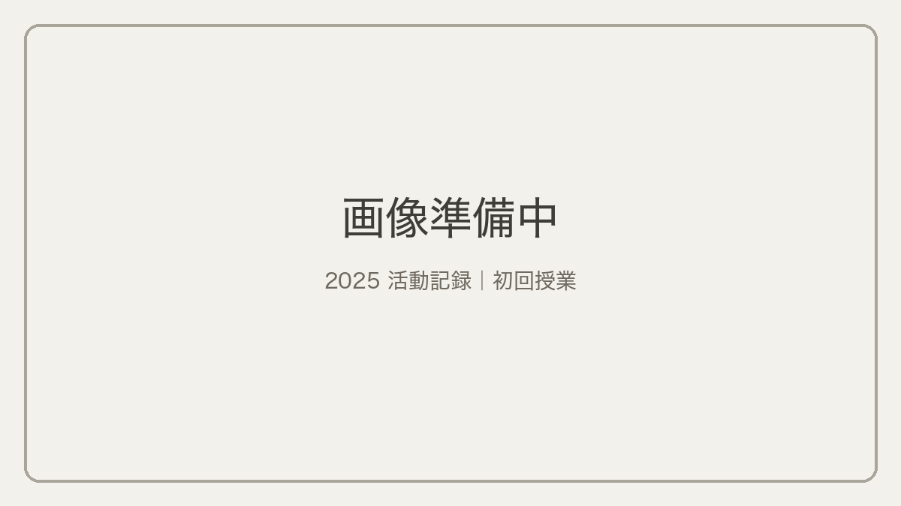
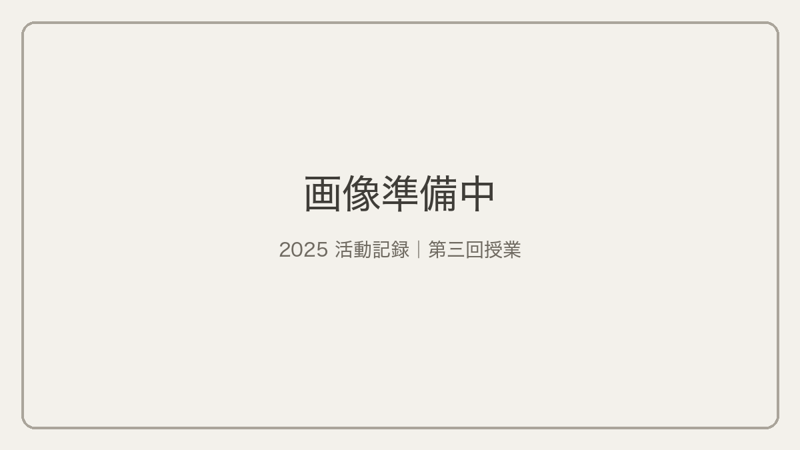
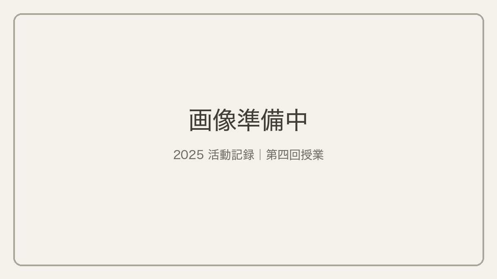

| 日 | 形式 | 内容 | 参加校 |
|---|---|---|---|
| 6/5（木） | 初回授業 | ガイダンス 高校での活動の報告 震災の歴史と復興の紹介 防災地理部と実務とのつながり | 宇和島東高校，宇和島南中等，大洲高校，大洲農業高校，天竜高校，南宇和高校，八幡浜高校 |
| 8/1（金）–3（日） | 東北復興視察 | 東日本大震災の被災地の復興を見学 | 宇和島東高校，宇和島南中等，大洲高校，大洲農業高校，天竜高校，南宇和高校，八幡浜高校 |
| 9/17（水） | 第二回授業 | 提案・活動のエスキス | 宇和島東高校，大洲高校，大洲農業高校，八幡浜高校 |
| 10/1（水） | 第二回授業 | 提案・活動のエスキス | 天竜高校 |
| 10/20（月） | 第二回授業 | 提案・活動のエスキス | 宇和島南中等，南宇和高校 |
| 10/29（水） | 第三回授業 | 提案・活動のエスキス | 大洲高校，大洲農業高校，八幡浜高校 |
| 11/4（火） | 第三回授業 | 提案・活動のエスキス | 宇和島東高校，天竜高校 |
| 11/17（月） | 第三回授業 | 提案・活動のエスキス | 宇和島南中等 |
| 11/20（木） | 第四回授業 | 提案・活動のエスキス | 八幡浜高校，大洲高校 |
| 12/4（木） | 第四回授業 | 提案・活動のエスキス | 宇和島東高校，宇和島南中等，天竜高校 |
| 12/6（土） | 復興デザイン会議 | 最終発表 | 宇和島東高校，宇和島南中等，大洲高校，大洲農業高校，天竜高校，南宇和高校，八幡浜高校 |
6月5日参加校：宇和島東高校，宇和島南中等，大洲高校，大洲農業高校，天竜高校，南宇和高校，八幡浜高校

愛媛県の八幡浜高校，宇和島東高校，宇和島南中等，南宇和高校，大洲高校，大洲農業高校と，静岡県の天竜高校とともに，東日本大震災の被災地を巡りました。
大川小学校や気仙沼向洋高校，田老町では，各地の当時の被害を語り部の方から伺い，極限状態での意思決定の難しさや備えの重要性を学びました。名取市閖上，釜石市鵜住居・唐丹町本郷・花露辺地区では，現地再建や高台移転などさまざまな復興の形を見学しました。一般社団法人ウィーアーワン北上の佐藤尚美様からは，復興の過程で地域住民が主体的に対話を重ねる大切さと難しさを伺いました。
9月17日参加校：宇和島東高校，大洲高校，大洲農業高校，八幡浜高校
10月1日参加校：天竜高校
10月20日参加校：宇和島南中等，南宇和高校
10月29日参加校：大洲高校，大洲農業高校，八幡浜高校
11月4日参加校：宇和島東高校，天竜高校
11月17日参加校：宇和島南中等

11月20日参加校：八幡浜高校，大洲高校
12月4日参加校：宇和島東高校，宇和島南中等，天竜高校

12月6日に愛媛県宇和島市のパフィオうわじまで開催された復興デザイン会議において，「次世代が描く地域復興：中高生による復興・事前復興の取り組み」の題で活動発表を行いました。宇和島東高校（2チーム），宇和島南中等，大洲高校，大洲農業高校，天竜高校，南宇和高校，八幡浜高校から事前復興プランを提案し，専門家の方からコメントをいただきました。